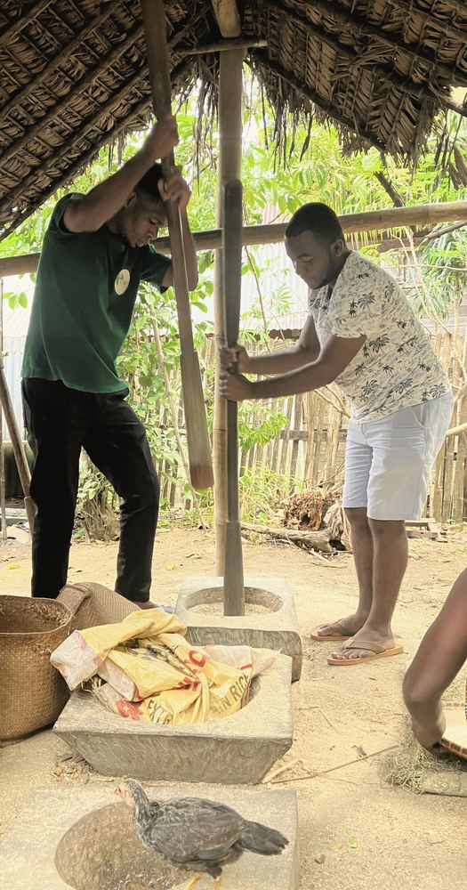
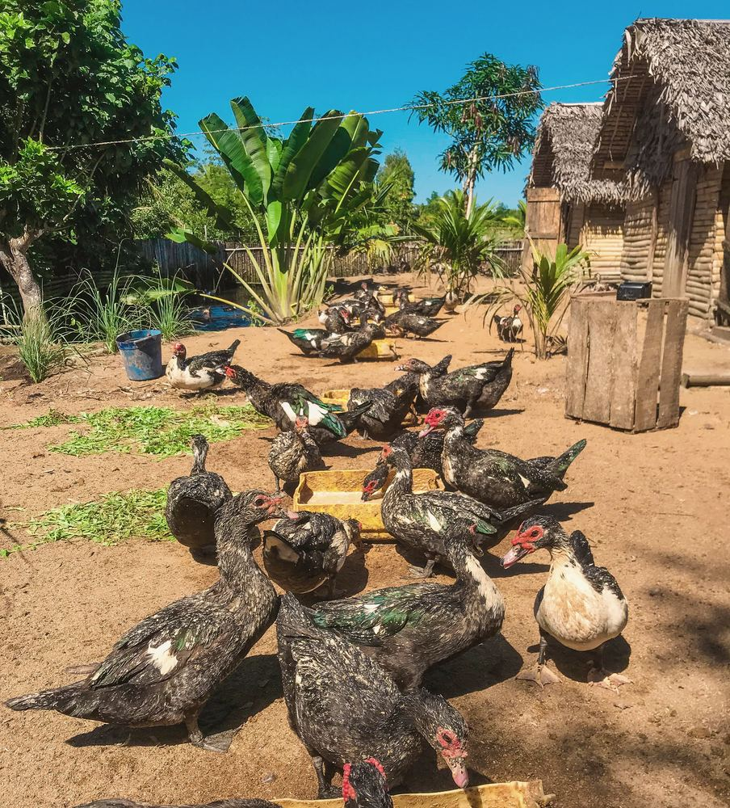

From seed to plate
Soil preparation, local crops, sowing, water, light, harvest and food uses.

The first ambition is concrete: preparing the land, securing the infrastructure, developing a livestock core, following breeding cycles and building an activity able to grow stronger over time.
The project rests on responsibility: every investment must contribute to real, lasting and monitored capacity.
01The productive project
The 2026–2029 development plan foresees a gradual start based on animal breeding, incubation, careful cost management and reinvestment.
Prepare the land→secure water and infrastructure→equip and protect→introduce animals gradually→monitor the cycles→sell when possible→reinvest
Planned configuration — not an inventory of livestock in place.
5,588,000ariary (MGA) for a first six-month phase
A planning reference for the productive core: land preparation, poultry house, rabbit hutch, cattle enclosure, incubators, animals and start-up equipment. This amount is neither an approved budget for the educational strand nor actual expenditure.

02The educational purpose
As it develops, LAOVA hopes to make the farm a place of practical learning where children, young people, families and partners discover the links between farming, food, biodiversity, water, animal care and the local economy.
Watching a seed germinate, understanding the role of soil, learning a skill from a farmer or following the stages of a production cycle: all are opportunities to learn.
This educational strand will be built with community resource persons and, when conditions allow, with school and community partners. It is not an entertaining extra: it is the educational expression of a rural development project.
03Four functions to combine
| Function | Purpose | Condition for credibility |
|---|---|---|
| Production | Running a gradual, monitored agro-pastoral activity. | Records, infrastructure, feed, health monitoring and clear management in place. |
| Demonstration | Making real techniques and choices visible. | A team able to explain its practices and acknowledge their limits. |
| Education | Developing active learning suited to each age group and audience. | Tested modules, verified safety and competent supervision. |
| Transmission | Bringing traditional knowledge, local experience and technical input into dialogue. | A real place for knowledge holders, consent and reciprocity. |
04Learning pathways
These pathways are proposals in preparation; none is open to the public at this stage. They will be tested with small groups before any regular programme.
Soil preparation, local crops, sowing, water, light, harvest and food uses.
Observing how plants and animals develop, with no access to sensitive areas and no handling of eggs.
Organic matter, drainage, moisture, waste management and resource protection.
Volunteer farmers, livestock keepers and craftspeople explain their techniques and the reasons behind them.
Using simple, anonymised data: costs, losses, output, income and reinvestment.
Local produce, cooking, preservation, seasonality and family transmission.
Welcome and safety→ask a question→observe, demonstrate→supervised participation→reflect on what was learned
05Development sequence
An order of dependency, not a promised timetable. A stage is announced as complete only on the basis of verified facts.
Land, water, drainage, structures, biosecurity, gradual acquisitions and records.
Current stageObservation areas, materials, an education lead, risk assessment.
Small groups, consent, testing, evaluation and adjustments.
Calendar, trained team, partnerships and visitor capacity validated.
New modules and partnerships, once decided and resourced.
06Safety and animal welfare
No visitors will be received until the conditions are in place: safe access, water points, hand washing, separation from sensitive production areas, supervision of minors and parental consent.
Animal welfare comes before demonstration: no repeated handling and no permanent display of animals to entertain visitors.

Get involved
No visits can be booked: the hosting protocol is being drawn up.
Progress on the farm is updated on this page at each verified stage.
Schools, teachers, youth associations: let us build the future learning pathways together.
Livestock, agronomy, animal health, management: competent support strengthens the productive core.
In time, and by agreement, Hasina Immersion may allow some people to understand how the farm works. This will remain secondary to local productive and educational goals. Learn more